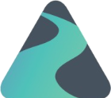

Feb – May 2026Software Engineer Intern
- Designed and built Go automation that streamlines business compliance workflows and reduces manual review.
- Automated GraphQL schema and query generation, cutting repetitive boilerplate.
- Wrote CI/CD test suites that catch regressions before deployment.